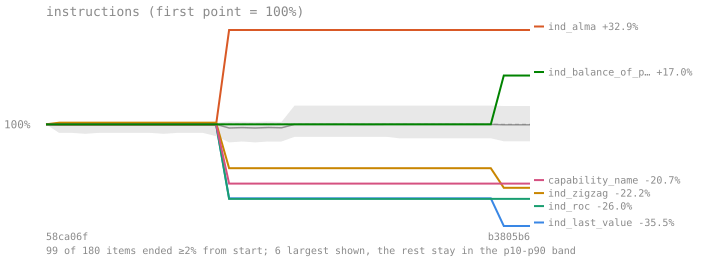
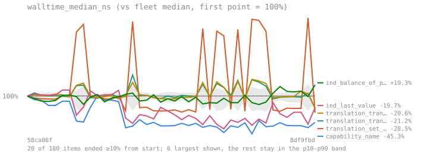
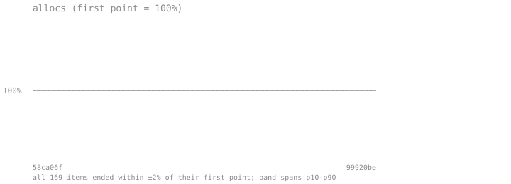

Performance summary#
Generated by
cargo soothfast report
| item | instructions | median | p99 | allocs | polls |
|---|---|---|---|---|---|
finance_query::bt_atr_sizing | 611611 | 55.23µs | 57.27µs | 164 | n/a |
finance_query::bt_base_to_htf_index | 321030 | 20.67µs | 21.22µs | 1 | n/a |
finance_query::bt_bayesian_search | 25951407 | 2.09ms | 2.15ms | 2382 | n/a |
finance_query::bt_fractional_kelly_sizing | 460777 | 37.81µs | 38.04µs | 88 | n/a |
finance_query::bt_grid_pareto | 12927949 | 513.50µs | 561.58µs | 2966 | n/a |
finance_query::bt_grid_search | 12984494 | 528.61µs | 594.87µs | 3012 | n/a |
finance_query::bt_leveraged_margin | 575278 | 45.80µs | 47.37µs | 158 | n/a |
finance_query::bt_monte_carlo | 1066372 | 143.02µs | 144.23µs | 6 | n/a |
finance_query::bt_resample | 1437366 | 85.43µs | 86.84µs | 11 | n/a |
finance_query::bt_sma_crossover | 9460724 | 766.75µs | 798.14µs | 2373 | n/a |
finance_query::bt_strategy_builder | 1066108 | 132.56µs | 150.00µs | 328 | n/a |
finance_query::capability_name | 23 | 1.6ns | 2.1ns | 0 | n/a |
finance_query::cond_bench_always_false | 247994 | 19.53µs | 20.06µs | 6 | n/a |
finance_query::cond_bench_always_true | 4119073 | 329.83µs | 342.93µs | 4045 | n/a |
finance_query::cond_bench_has_position | 4108078 | 327.48µs | 332.87µs | 4045 | n/a |
finance_query::cond_bench_held_for_bars | 1575093 | 126.12µs | 130.61µs | 1041 | n/a |
finance_query::cond_bench_in_loss | 4054928 | 324.47µs | 335.26µs | 4045 | n/a |
finance_query::cond_bench_in_profit | 543973 | 40.35µs | 41.19µs | 142 | n/a |
finance_query::cond_bench_is_long | 4105958 | 326.12µs | 335.43µs | 4045 | n/a |
finance_query::cond_bench_is_short | 395459 | 28.76µs | 29.21µs | 13 | n/a |
finance_query::cond_bench_no_position | 395435 | 28.76µs | 29.09µs | 13 | n/a |
finance_query::cond_bench_stop_loss | 449014 | 35.78µs | 42.87µs | 24 | n/a |
finance_query::cond_bench_take_profit | 437357 | 34.57µs | 43.93µs | 13 | n/a |
finance_query::cond_bench_trailing_stop | 579160 | 42.58µs | 46.18µs | 92 | n/a |
finance_query::cond_bench_trailing_take_profit | 585914 | 44.32µs | 44.99µs | 72 | n/a |
finance_query::de_chart | 106297 | 7.03µs | 7.31µs | 13 | n/a |
finance_query::de_crypto_coins | 333201 | 25.74µs | 26.18µs | 205 | n/a |
finance_query::de_currencies | 571552 | 38.45µs | 39.82µs | 647 | n/a |
finance_query::de_edgar_facts | 13462250 | 1.06ms | 1.07ms | 11899 | n/a |
finance_query::de_edgar_submissions | 5073237 | 314.21µs | 327.90µs | 6784 | n/a |
finance_query::de_fear_and_greed | 1390 | 92.5ns | 95.1ns | 0 | n/a |
finance_query::de_fear_and_greed_crypto_history | 15279 | 1.01µs | 1.04µs | 3 | n/a |
finance_query::de_financials | 221839 | 16.62µs | 22.28µs | 206 | n/a |
finance_query::de_fred_series | 1204611 | 81.17µs | 84.18µs | 873 | n/a |
finance_query::de_hours | 6533 | 498.3ns | 506.1ns | 10 | n/a |
finance_query::de_market_summary | 246099 | 22.30µs | 22.42µs | 228 | n/a |
finance_query::de_news | 36514 | 2.62µs | 2.70µs | 53 | n/a |
finance_query::de_options | 12421 | 828.9ns | 834.3ns | 6 | n/a |
finance_query::de_quote | 9170408 | 739.11µs | 785.70µs | 8235 | n/a |
finance_query::de_screener | 3839450 | 281.48µs | 291.98µs | 4498 | n/a |
finance_query::de_search | 51247 | 4.08µs | 4.15µs | 55 | n/a |
finance_query::de_treasury_yields | 763394 | 58.81µs | 60.67µs | 119 | n/a |
finance_query::de_trending | 14551 | 964.3ns | 971.5ns | 24 | n/a |
finance_query::dispatch_select | 68 | 3.2ns | 3.5ns | 0 | n/a |
finance_query::ind_accumulation_distribution | 27599 | 3.31µs | 3.82µs | 1 | n/a |
finance_query::ind_alma | 107531 | 4.61µs | 4.76µs | 2 | n/a |
finance_query::ind_aroon | 185456 | 8.93µs | 9.08µs | 9 | n/a |
finance_query::ind_atr | 56332 | 8.45µs | 8.49µs | 2 | n/a |
finance_query::ind_awesome_oscillator | 52213 | 7.31µs | 7.33µs | 4 | n/a |
finance_query::ind_balance_of_power | 27196 | 1.99µs | 2.06µs | 2 | n/a |
finance_query::ind_bull_bear_power | 29364 | 6.04µs | 6.10µs | 3 | n/a |
finance_query::ind_cci | 149057 | 14.65µs | 14.80µs | 2 | n/a |
finance_query::ind_chaikin_oscillator | 66620 | 14.01µs | 14.11µs | 4 | n/a |
finance_query::ind_choppiness_index | 273287 | 15.95µs | 17.05µs | 8 | n/a |
finance_query::ind_cmf | 49268 | 3.32µs | 3.37µs | 2 | n/a |
finance_query::ind_cmo | 61596 | 4.54µs | 4.57µs | 2 | n/a |
finance_query::ind_coppock_curve | 72517 | 6.75µs | 6.78µs | 3 | n/a |
finance_query::ind_dema | 40719 | 10.40µs | 10.58µs | 3 | n/a |
finance_query::ind_donchian_channels | 181503 | 8.59µs | 8.84µs | 9 | n/a |
finance_query::ind_elder_ray | 29365 | 6.04µs | 6.10µs | 3 | n/a |
finance_query::ind_fibonacci_pivot_points | 24490 | 2.18µs | 2.22µs | 1 | n/a |
finance_query::ind_fibonacci_retracement | 184932 | 8.68µs | 8.88µs | 9 | n/a |
finance_query::ind_heikin_ashi | 129121 | 11.77µs | 12.84µs | 9 | n/a |
finance_query::ind_hma | 99920 | 11.54µs | 11.72µs | 5 | n/a |
finance_query::ind_ichimoku | 534364 | 25.91µs | 26.35µs | 27 | n/a |
finance_query::ind_keltner_channels | 97152 | 14.70µs | 15.00µs | 5 | n/a |
finance_query::ind_last_value | 20 | 2.2ns | 2.5ns | 0 | n/a |
finance_query::ind_macd | 82090 | 16.96µs | 17.74µs | 7 | n/a |
finance_query::ind_mcginley_dynamic | 21641 | 10.69µs | 10.77µs | 1 | n/a |
finance_query::ind_mfi | 94012 | 5.78µs | 5.86µs | 3 | n/a |
finance_query::ind_momentum | 1184138 | 102.61µs | 108.33µs | 52 | n/a |
finance_query::ind_momentum_single | 7947 | 445.7ns | 452.6ns | 1 | n/a |
finance_query::ind_moving_averages | 477320 | 74.01µs | 74.73µs | 27 | n/a |
finance_query::ind_parabolic_sar | 25059 | 1.77µs | 1.89µs | 1 | n/a |
finance_query::ind_patterns | 1184379 | 81.75µs | 83.13µs | 1 | n/a |
finance_query::ind_pivot_points | 25985 | 2.50µs | 2.50µs | 1 | n/a |
finance_query::ind_roc | 16803 | 1.44µs | 1.49µs | 1 | n/a |
finance_query::ind_sma | 2200066 | 328.92µs | 353.54µs | 1 | n/a |
finance_query::ind_stochastic | 225965 | 12.83µs | 12.95µs | 11 | n/a |
finance_query::ind_stochastic_rsi | 287290 | 21.49µs | 21.84µs | 12 | n/a |
finance_query::ind_supertrend | 117644 | 11.50µs | 11.70µs | 4 | n/a |
finance_query::ind_tema | 57793 | 15.32µs | 15.44µs | 4 | n/a |
finance_query::ind_trend | 1033490 | 71.49µs | 74.25µs | 48 | n/a |
finance_query::ind_true_range | 17018 | 993.3ns | 1.01µs | 1 | n/a |
finance_query::ind_volatility | 664952 | 53.46µs | 55.80µs | 28 | n/a |
finance_query::ind_volume | 315407 | 35.11µs | 35.65µs | 14 | n/a |
finance_query::ind_vwap | 31598 | 3.39µs | 3.41µs | 1 | n/a |
finance_query::ind_vwma | 43545 | 2.32µs | 2.35µs | 1 | n/a |
finance_query::ind_williams_r | 180303 | 8.39µs | 9.26µs | 7 | n/a |
finance_query::ind_wma | 30718 | 3.71µs | 3.75µs | 7 | n/a |
finance_query::ind_zigzag | 18133 | 1.13µs | 1.14µs | 4 | n/a |
finance_query::ref_bench_accumulation_distribution | 567712 | 42.80µs | 43.93µs | 23 | n/a |
finance_query::ref_bench_adx | 5303622 | 407.62µs | 419.84µs | 4930 | n/a |
finance_query::ref_bench_alma | 5766047 | 440.25µs | 451.83µs | 5019 | n/a |
finance_query::ref_bench_aroon | 5398044 | 409.21µs | 463.94µs | 4950 | n/a |
finance_query::ref_bench_atr | 5419816 | 411.81µs | 423.69µs | 4996 | n/a |
finance_query::ref_bench_awesome_oscillator | 3419963 | 250.94µs | 255.80µs | 2636 | n/a |
finance_query::ref_bench_balance_of_power | 572810 | 42.86µs | 43.29µs | 25 | n/a |
finance_query::ref_bench_bear_power | 1437245 | 112.75µs | 118.20µs | 806 | n/a |
finance_query::ref_bench_bollinger | 5851550 | 433.51µs | 453.17µs | 4968 | n/a |
finance_query::ref_bench_bull_power | 5059204 | 384.01µs | 402.34µs | 4238 | n/a |
finance_query::ref_bench_candle_body | 252000 | 19.09µs | 19.38µs | 6 | n/a |
finance_query::ref_bench_candle_range | 4949518 | 382.31µs | 399.21µs | 5043 | n/a |
finance_query::ref_bench_cci | 3149260 | 244.76µs | 246.28µs | 2605 | n/a |
finance_query::ref_bench_chaikin_oscillator | 642309 | 55.92µs | 56.80µs | 26 | n/a |
finance_query::ref_bench_choppiness_index | 5621972 | 423.27µs | 442.00µs | 5002 | n/a |
finance_query::ref_bench_close | 5076053 | 385.17µs | 389.86µs | 5043 | n/a |
finance_query::ref_bench_cmf | 582999 | 41.75µs | 42.07µs | 25 | n/a |
finance_query::ref_bench_cmo | 2951668 | 234.62µs | 239.80µs | 2598 | n/a |
finance_query::ref_bench_coppock_curve | 3258240 | 247.64µs | 262.78µs | 2559 | n/a |
finance_query::ref_bench_dema | 5269522 | 406.34µs | 422.39µs | 4875 | n/a |
finance_query::ref_bench_donchian | 6038983 | 437.41µs | 456.80µs | 4976 | n/a |
finance_query::ref_bench_elder_bear_power | 1434180 | 113.35µs | 117.32µs | 806 | n/a |
finance_query::ref_bench_elder_bull_power | 5095542 | 382.26µs | 394.09µs | 4238 | n/a |
finance_query::ref_bench_ema | 5376135 | 404.98µs | 420.36µs | 4963 | n/a |
finance_query::ref_bench_gap_pct | 2551285 | 206.28µs | 209.71µs | 2489 | n/a |
finance_query::ref_bench_high | 5056541 | 383.66µs | 401.50µs | 5043 | n/a |
finance_query::ref_bench_hma | 5461724 | 413.14µs | 418.46µs | 4957 | n/a |
finance_query::ref_bench_htf | 6389228 | 471.53µs | 492.52µs | 7039 | n/a |
finance_query::ref_bench_htf_region | 6111933 | 466.21µs | 475.52µs | 7039 | n/a |
finance_query::ref_bench_ichimoku | 6231063 | 452.60µs | 466.25µs | 4836 | n/a |
finance_query::ref_bench_ichimoku_custom | 6281359 | 457.08µs | 477.20µs | 4836 | n/a |
finance_query::ref_bench_is_bearish | 252999 | 18.98µs | 19.16µs | 6 | n/a |
finance_query::ref_bench_is_bullish | 252999 | 18.73µs | 18.77µs | 6 | n/a |
finance_query::ref_bench_keltner | 6056587 | 451.44µs | 565.45µs | 4972 | n/a |
finance_query::ref_bench_low | 5007783 | 381.43µs | 392.78µs | 5043 | n/a |
finance_query::ref_bench_macd | 3194649 | 258.80µs | 281.08µs | 2541 | n/a |
finance_query::ref_bench_mcginley | 5253164 | 409.25µs | 431.44µs | 4963 | n/a |
finance_query::ref_bench_median_price | 4950516 | 385.96µs | 407.05µs | 5043 | n/a |
finance_query::ref_bench_mfi | 5500746 | 409.22µs | 418.15µs | 4998 | n/a |
finance_query::ref_bench_momentum | 2803653 | 230.09µs | 241.06µs | 2552 | n/a |
finance_query::ref_bench_obv | 625041 | 50.58µs | 50.88µs | 30 | n/a |
finance_query::ref_bench_open | 5077043 | 386.00µs | 404.24µs | 5043 | n/a |
finance_query::ref_bench_parabolic_sar | 5796356 | 444.64µs | 458.34µs | 5056 | n/a |
finance_query::ref_bench_price | 5076053 | 385.18µs | 399.91µs | 5043 | n/a |
finance_query::ref_bench_price_change_pct | 2877955 | 217.76µs | 222.86µs | 2489 | n/a |
finance_query::ref_bench_relative_volume | 5651813 | 420.39µs | 426.55µs | 4949 | n/a |
finance_query::ref_bench_roc | 2957261 | 230.69µs | 236.12µs | 2587 | n/a |
finance_query::ref_bench_rsi | 5380500 | 405.34µs | 422.09µs | 4994 | n/a |
finance_query::ref_bench_sma | 5380051 | 403.26µs | 405.85µs | 4963 | n/a |
finance_query::ref_bench_stochastic | 6089010 | 455.83µs | 481.92µs | 4987 | n/a |
finance_query::ref_bench_stochastic_rsi | 6000850 | 447.91µs | 463.67µs | 4831 | n/a |
finance_query::ref_bench_supertrend | 5951549 | 446.33µs | 475.90µs | 5021 | n/a |
finance_query::ref_bench_tema | 5030837 | 404.29µs | 422.57µs | 4781 | n/a |
finance_query::ref_bench_true_range | 5278172 | 410.71µs | 441.40µs | 5059 | n/a |
finance_query::ref_bench_typical_price | 5350298 | 411.07µs | 423.79µs | 5043 | n/a |
finance_query::ref_bench_volume | 5077043 | 388.07µs | 390.44µs | 5043 | n/a |
finance_query::ref_bench_vwap | 5358254 | 413.38µs | 436.30µs | 5060 | n/a |
finance_query::ref_bench_vwma | 5403439 | 402.55µs | 418.87µs | 4964 | n/a |
finance_query::ref_bench_williams_r | 742062 | 49.28µs | 51.18µs | 29 | n/a |
finance_query::ref_bench_wma | 5388817 | 399.86µs | 410.77µs | 4969 | n/a |
finance_query::risk_beta | 270416 | 53.53µs | 54.11µs | 0 | n/a |
finance_query::risk_calmar | 130 | 10.9ns | 11.5ns | 0 | n/a |
finance_query::risk_historical_cvar | 4313777 | 240.10µs | 248.45µs | 2 | n/a |
finance_query::risk_historical_var | 31047089 | 2.15ms | 2.17ms | 2 | n/a |
finance_query::risk_information_ratio | 145830 | 30.20µs | 30.28µs | 1 | n/a |
finance_query::risk_kelly_criterion | 30594 | 2.87µs | 2.96µs | 16 | n/a |
finance_query::risk_max_drawdown | 35060 | 7.01µs | 7.06µs | 1 | n/a |
finance_query::risk_omega_ratio | 143401 | 26.77µs | 27.67µs | 0 | n/a |
finance_query::risk_parametric_cvar | 100416 | 26.79µs | 26.91µs | 0 | n/a |
finance_query::risk_parametric_var | 100412 | 26.80µs | 26.95µs | 0 | n/a |
finance_query::risk_sharpe | 100406 | 26.79µs | 27.15µs | 0 | n/a |
finance_query::risk_sortino | 170035 | 26.78µs | 26.97µs | 0 | n/a |
finance_query::risk_tracking_error | 145827 | 30.20µs | 30.29µs | 1 | n/a |
finance_query::risk_ulcer_index | 619284 | 157.19µs | 157.91µs | 2 | n/a |
finance_query::risk_win_loss_stats | 389447 | 43.19µs | 46.91µs | 25 | n/a |
finance_query::rss_parse | 60901 | 4.17µs | 4.33µs | 48 | n/a |
finance_query::score_news | 862325 | 55.36µs | 57.81µs | 976 | n/a |
finance_query::score_transcript | 45151602 | 3.55ms | 3.62ms | 42100 | n/a |
finance_query::ser_currencies | 201864 | 11.12µs | 11.33µs | 8 | n/a |
finance_query::stream_deserialize | 14030 | 891.7ns | 918.3ns | 4 | n/a |
finance_query::stream_serialize | 11156 | 794.2ns | 801.6ns | 4 | n/a |
finance_query::ticker_chart_then_cached | 10873 | 1.04µs | 1.07µs | 20 | n/a |
finance_query::ticker_quote_polls | 222497 | 5.41µs | 5.56µs | 3 | 1 |
finance_query::ticker_quote_then_cached | 419623 | 8.52µs | 8.55µs | 4 | n/a |
finance_query::tickers_batch_quote_then_cached | 235333 | 7.89µs | 7.98µs | 16 | n/a |
finance_query::translate_dictionary | 15704 | 1.32µs | 1.43µs | 49 | n/a |
finance_query::translation_set_backend | 177 | 13.0ns | 14.3ns | 1 | n/a |
finance_query::translation_translate | 35931 | 2.25µs | 2.30µs | 79 | n/a |
finance_query::translation_translate_with | 35134 | 2.18µs | 2.24µs | 77 | n/a |



built with cargo soothfast docs build
source